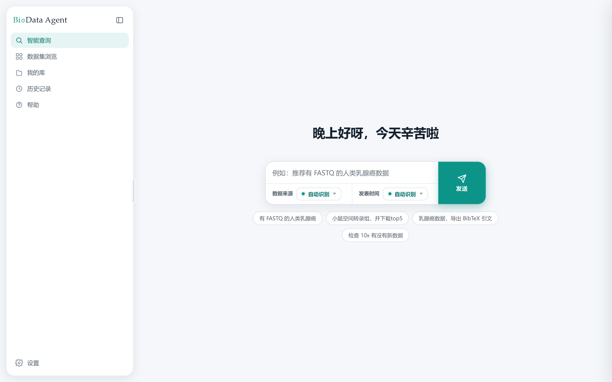
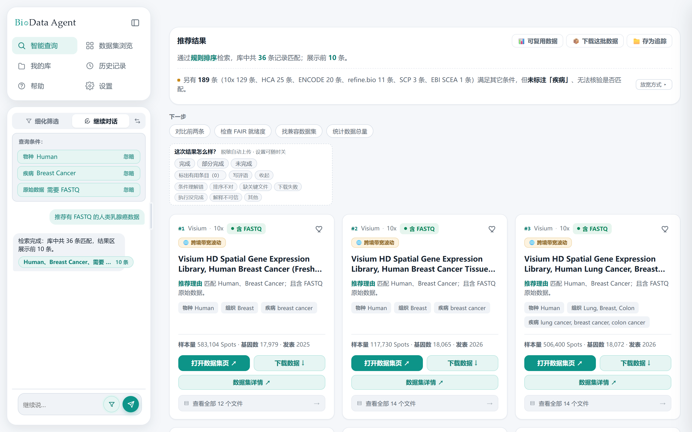
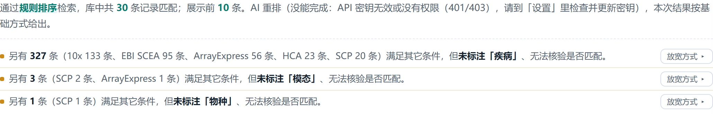
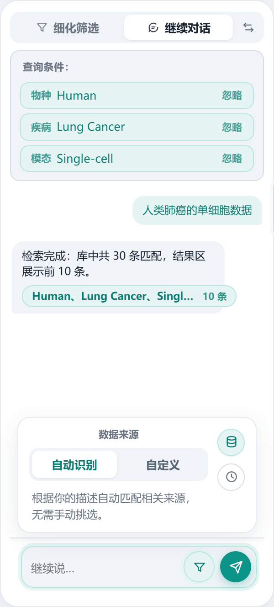
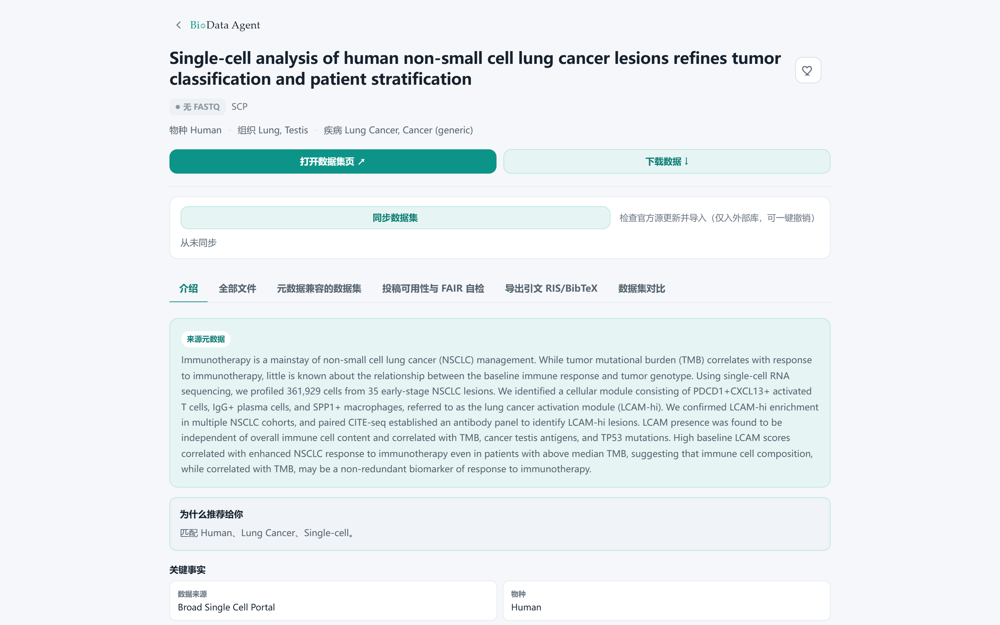
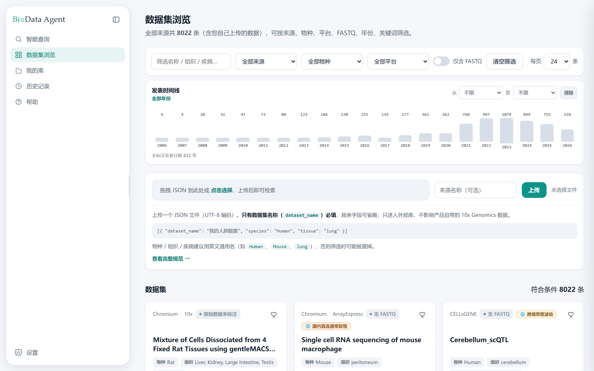
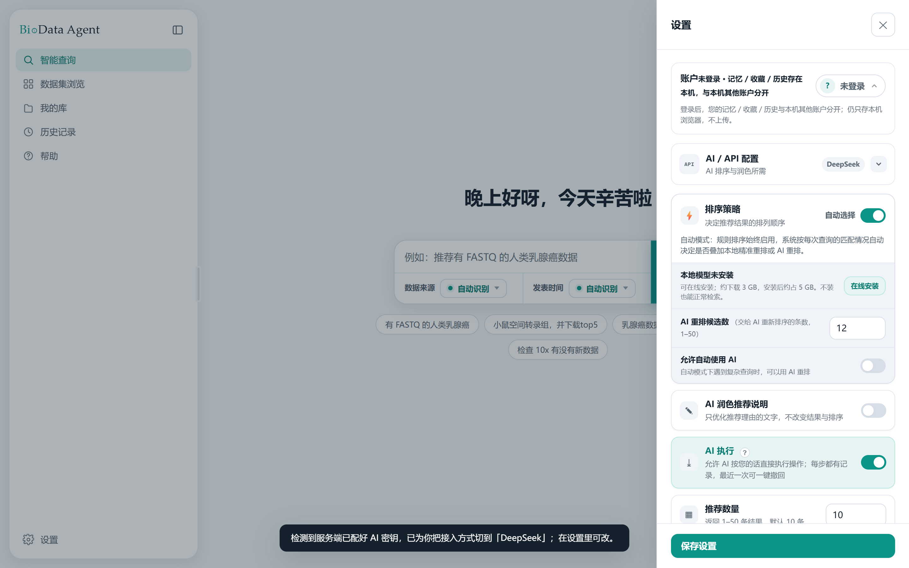

BioData Agent 是一个数据集检索工具。你用中文写一句实验需求，它在公开的单细胞与空间组学数据集目录里找出符合条件的数据集，按相关度排好，并逐条说明为什么被推荐。
它不只做检索：还围绕每个数据集提供科研常用的信息与资源——结构化介绍、文件清单、FAIR 自检、可比对的数据集、投稿材料与引文导出等。
它处理的是元数据，不是数据本身。系统里存的是每个数据集的标题、物种、组织、疾病、实验技术与平台、发表时间、公开页面与下载地址、文件清单（文件名、大小、MD5）；没有基因序列、表达矩阵、实验方案，也没有任何非公开的临床原始数据。找到数据集后，它把你带到公开下载地址；也可以勾选数据集后点「📦 下载这批数据」——能直接下载的来源会把真实文件下载到本机（每个数据集一个文件夹，下载完做大小 / MD5 校验），暂不支持直接下载的来源则退而生成清单、下载脚本与引文的任务包（见 10.5）。
Windows 上有两种安装方式，功能完全一致，选一种即可：
| 项目 | 要求 |
|---|---|
| 操作系统 | Windows 10 / 11（安装版用图形化安装器，便携版用双击启动脚本）；macOS、Linux 用一键启动提交包（见 2.3：双击 打开前端.command 或 sh 打开前端.sh，自动找 Python 3.10+、建/复用运行环境、装依赖、首启三问、端口漂移、自动开浏览器），三者功能一致 |
| Python | 安装版不需要自己装 Python（全部随包）；便携版需要 3.10 或更高版本 |
| 浏览器 | 任意现代浏览器（Edge / Chrome / Firefox） |
| 网络 | 安装版基础安装、升级与检索都不需要联网（勾选可选的本地语义模型时除外）；便携版首次安装依赖时需要联网。只有开启 AI 功能、或安装可选的本地语义模型时才需要联网 |
| 磁盘 |
安装版：安装包约 40 MB，装好后程序约 100 MB（Python、依赖与内置数据全部随包，不再需要额外环境）。 便携版：基本安装约 100 MB——程序与内置数据约 30 MB，Python 环境约 60 MB（首次启动自动准备，优先复用本机已有环境，均无才新建）。 两种方式加装可选的本地语义模型后约占 4.5 GB：模型权重约 2.7 GB（重排 + 嵌入双模型），外加 PyTorch 等运行库与运行环境缓存约 1.8 GB；总下载约 3.5 GB。建议预留 6.5 GB。 这个模型不装也能用，只影响「本地精准重排」这一层，见 10.4。 |
双击安装包 BioData-Agent-Setup-2.6.0-win-x64-unsigned-dev.exe，按向导一步步走完即可：
%LOCALAPPDATA%\Programs\BioData Agent，可以改成任意位置，支持中文路径）→ 选择开始菜单文件夹 →（可选）勾选「创建桌面快捷方式」；（可选）勾选「本地语义模型」——默认不勾，勾选后安装器会在安装完成后联网下载本地语义模型（见 10.4），不勾也能随时在设置页补装。启动：双击桌面或开始菜单里的 BioData Agent。启动后没有黑色命令行窗口，任务栏托盘区会出现一个图标，右键可以：打开主界面、打开日志目录、复制访问地址、退出。再双击一次不会重复开第二个窗口，而是直接打开已在运行的那个实例。访问地址固定在 http://127.0.0.1:7860，不会因为重启或升级而变，浏览器里的收藏和历史不会失效。
升级：下载新版安装包，直接双击安装覆盖即可，你的数据不会动。如果程序正在运行，安装程序会先提示你退出再继续；旧版本安装程序不能覆盖已安装的更新版本。
卸载：在「设置 → 应用」里找到 BioData Agent 卸载。卸载默认保留你的本地数据（账户、上传、密钥配置、日志等，在 %LOCALAPPDATA%\BioDataAgent）；卸载界面有一个「同时删除我的本地数据」选项，默认不勾选——勾选后这些数据会一并删除，无法恢复，请确认不再需要再勾。
从旧便携版迁移：安装版装好后，想把旧便携版（zip 源码包）里已有的账户、上传、密钥配置等带过来：在开始菜单里右键 BioData Agent →「打开文件所在位置」，在地址栏输入 cmd 回车，然后在命令行窗口里执行：
BioDataAgent.exe --migrate-from "旧便携版所在目录"
它只迁数据、不迁程序；会先做一次只读检查并把待迁移清单写进日志（dry-run，此时不会写任何数据），核对无误后自动开始复制。目标里已存在且内容不同的文件会保留双方（旧文件不动，新复制的一份带 .migrated 后缀）；旧目录不会被删除。还想把便携版里已下载的本地语义模型一起带过来，加一个参数：
BioDataAgent.exe --migrate-from "旧便携版所在目录" --include-models
解压即用，适合想保留旧操作习惯、或需要在多台电脑之间复制使用的用户。升级方式：解压新版覆盖旧目录即可，数据保留。旧便携版的数据迁移到安装版的方法见 2.2.1。
打开前端.bat（start-web.bat 是同一个东西，两个名字都可以）。http://127.0.0.1:7860，装好后会自动打开浏览器。
如果 7860 已被占用，启动器会自动顺延到 7861–7869 里第一个空闲端口，实际地址以启动窗口里显示的那一行为准。如果占用 7860 的正好是已经在运行的同一个 BioData Agent，它会直接打开那个，不会重复启动。（可选）想省去每次翻文件夹：双击提交包根目录里的 创建桌面快捷方式.bat，会在桌面生成一个 BioData Agent 快捷方式，以后从桌面图标即可一键打开（快捷方式指向当前文件夹，移动或删除后重跑一次即可刷新）。
如果 Python 没有加入系统 PATH，可以在启动前指定解释器路径：
$env:BIODATA_PYTHON = 'D:\Python312\python.exe' .\打开前端.bat
想临时换端口：
$env:PORT = '7861' .\打开前端.bat
安装版没有这一步：安装器不询问密钥，首次使用的 AI 配置在网页「设置 → AI / API 配置」里完成（见 10.3）。
Windows 便携版双击 打开前端.bat，macOS 双击 打开前端.command、Linux 运行 sh 打开前端.sh——它们都会在第一次启动时问你下面三个可选问题，把两项本来要手动敲命令的可选功能一并装好，不用再翻文档配环境。它们只在第一次问，之后每次启动都直接进入服务，不会再打扰你。
窗口里的提示是英文的（这是为了避免中文在部分 Windows 命令行下显示成乱码），对照着看就行：
| 窗口里出现的那一行 | 意思与怎么答 |
|---|---|
Configure an AI API key now? [y/N] | 要不要现在配 AI 接口。输入 y 回车＝配：接着从 8 个服务商里选一个编号（DeepSeek / Kimi / Qwen / GLM / OpenRouter / OpenAI / 自填兼容接口 / 本机 Ollama），再粘贴自己的 API Key，写进项目根目录的 .env。直接回车＝跳过，不影响使用 |
Install agent execution dependencies now? [y/N] | 要不要装 AI 执行依赖（langgraph）。输入 y 回车＝装（约 1 分钟）。直接回车＝跳过，AI 执行退回内置的单步规划器，多步规划能力不可用；之后可随时补装：pip install -r requirements-langchain.txt |
Download the local model now? [y/N] | 要不要现在下本地语义模型。输入 y 回车＝下：自动装依赖并下载权重（总下载约 3 GB，装完占磁盘约 4 GB，耗时较长）。直接回车＝跳过，「本地精准重排」保持关闭，系统自动退回规则排序 |
选完之后会打印 === Setup finished ===，随后正常启动。已经配过的不会再问：如果 .env 已存在，就不问 AI；如果模型已下好，就不问模型。
.env，不会上传，也不会出现在启动日志里。.env 后，只要网页端从没保存过自己的设置，「设置 → AI / API 配置」会自动选中同一个服务商、直接适用服务端配好的密钥，AI 功能开箱即用。本工具没有「AI 总开关」：密钥就绪即可用。如果你以前在网页里保存过设置、接入方式停在「本地演示（无需密钥）」，就手动改选同一个服务商（接口地址保持默认时密钥框可留空）。.env 里的不一致，服务端出于安全不会把自己的密钥交给这个请求，AI 依然不可用。
如果 Python 没有加入系统 PATH，可以在启动前指定解释器路径（Windows 写法；macOS / Linux 的 export 写法见 2.3）：
$env:BIODATA_PYTHON = 'D:\Python312\python.exe' .\打开前端.bat
想临时换端口（Windows 写法；macOS / Linux 见 2.3）：
$env:PORT = '7861' .\打开前端.bat
macOS、Linux 推荐用一键启动提交包，体验对齐 Windows 便携版：自动找 Python 3.10+ → 建/复用运行环境 → 装依赖 → 首启三问向导（见 2.2.3）→ 端口漂移 → 就绪自动开浏览器。
brew install python@3.12，或到 python.org 下载安装包）。双击提交包里的 打开前端.command。若 macOS 提示「来自身份不明的开发者」，右键图标 →「打开」，或先在终端执行 chmod +x 打开前端.command。sudo apt install python3 python3-venv；Fedora / RHEL：sudo dnf install python3）。在终端里运行 sh 打开前端.sh。http://127.0.0.1:7860；若 7860 被占用会自动顺延到 7861–7869 里第一个空闲端口，实际地址以启动窗口里显示的那一行为准。若同一版本的 BioData Agent 已在运行，会直接复用它而不重复启动。覆盖默认行为（可选）：启动器会自动找 Python，你也可以显式指定解释器或临时换端口。POSIX 用前缀式或 export（多条命令要在同一终端里）：
BIODATA_PYTHON=/path/to/python3 sh 打开前端.sh # 或 export PORT=7861 sh 打开前端.sh
备选：手动命令行方式——如果你更习惯手动建环境：
cd /path/to/biodata-agent python3 -m venv .venv ./.venv/bin/python -m pip install -r requirements.txt ./.venv/bin/python scripts/run_web.py
环境建好之后，以后每次只要跑最后一行。
推荐有 FASTQ 的人类乳腺癌数据。首次进入页面会有一个 14 步的新手教程：第 0 步先讲这个版本在使用反馈上的承诺（默认开启数据采集：发送的消息、执行结果和评分只存在本机——本包出厂未配置上传通道，不会上传；若部署方另外配置了上传通道，记录才会经尽力过滤后经明文 HTTP 上传到部署方服务器、保留 90 天，用于改善产品；尽力过滤并非匿名化，请勿输入敏感内容；可在设置里随时关闭，见 9.4），再引导你发高质量查询；其中「让复杂任务真正跑起来」一步会展开真实的 API 配置表单（填自己的 Key、可跳过），「接进你自己的 AI 助手」一步（见 11，完全可选，跳过不影响任何功能）也在教程里。教程可以拖动、可以跳过，之后随时能在「帮助」里重新打开。
安装版：右键任务栏托盘区的 BioData Agent 图标 →「退出」。
便携版：关掉启动时弹出的那个黑色命令行窗口，服务就停止了。
macOS / Linux 一键包：关掉启动时弹出的终端窗口，或在终端里按 Ctrl+C。
你的收藏、历史、偏好都存在这台电脑上，下次启动还在。

| 区域 | 作用 |
|---|---|
| 左侧「智能查询」 | 用一句话检索。这是主要入口。 |
| 左侧「数据集浏览」 | 不带具体问题时，按来源 / 物种 / 平台 / 年份直接翻目录。上传自己的数据集也在这里。 |
| 左侧「我的库」 | 浮窗（可拖动、可调大小；与历史记录浮窗互斥，打开一个会自动收起另一个）。双页签：追踪管理长期跟进的方向（存为追踪、候选名单、检查更新、导出，见 9.5）；收藏管理收藏的数据集（收藏夹管理与投稿材料，见 8）。批量检查入口在追踪页签头部。 |
| 左侧「历史记录」 | 独立浮窗（可拖动、可调大小），看最近查询与当时结果快照（最多 50 次检索，见 9.2）。 |
| 左侧「帮助」 | 功能说明，以及重新打开新手教程；页面底部是「接入 AI 助手（MCP）」入口（在线接入令牌 / 复制接入提示词 / 下载技能包，见 11）。 |
| 左下「设置」 | 排序策略、推荐数量、AI / API 配置、用户记忆开关、使用反馈开关（默认开启，见 9.4）。 |
| 检索框右端范围圆钮 →「数据来源」 | 默认「自动识别」：从你的句子里判断该查哪些来源（识别落地时圆钮会亮一下并浮出摘要）。点圆钮展开后可改成手动勾选。 |
| 检索框右端范围圆钮 →「发表时间」 | 默认「自动识别」：从句子里读出时间范围（如"近三年"）。点圆钮展开后可手动输入或选起止年份。 |
首页顶部是一个会定时切换的轮播问候：先按时段与你打招呼，再轮流提示「对话式检索数据、初步分析数据、下载数据、维护数据库——数据的事，一句话交代即可」和「每条推荐都说明理由，也可直接粘贴数据集编号或 DOI 直达。」鼠标悬停或键盘聚焦时暂停切换；如果你在系统里开启了「减弱动效」，轮播会静止在第一条问候语上，不再切换。
系统会从你的句子里找出下面这些条件，把它们变成必须满足（或必须排除）的筛选项：
| 条件 | 你可以怎么写 | 说明 |
|---|---|---|
| 物种 | 人类 / 人 / human；小鼠 / 鼠 / mouse | 中英文都认，常见别名会自动对应 |
| 组织 | 肺、脑、乳腺、肾、肝…… | 中英文都认 |
| 疾病 | 乳腺癌、肺癌、阿尔茨海默…… | 中英文都认 |
| 技术与平台 | scRNA-seq、空间转录组、Visium、Xenium、Chromium、10x | 平台名和技术名都能识别 |
| 发表时间 | 近三年、2020 年以来、2015 到 2020 | 也可以在「发表时间」里手动输入或选年份 |
| 数据来源 | CELLxGENE、HCA、ArrayExpress、EBI、10x、ENCODE、HuBMAP、SCP、GEO、Zenodo、refine.bio | 句子里不点名来源，就只查 10x 基础库那 784 条；要查其它来源得点名，或在「数据来源」里手动勾选，见 13.2 |
| 原始数据 | 有 FASTQ、含原始数据、不要 FASTQ | 指是否提供原始测序文件 |
| 排除条件 | 不要小鼠、除了脑以外、不含空间转录组 | 明确的否定会变成"必须排除" |
| 排序偏好 | 人类肺数据，优先 Visium | 软偏好：只影响排序、不做筛选，见 4.2 |
| 数据集编号 | 直接粘贴 E-MTAB-1234、UUID、论文 DOI | 精确定位，见 5.8 |
| 你写 | 系统理解为 |
|---|---|
| 推荐近三年 CELLxGENE 中的人类肝脏单细胞数据 | 时间=近三年；来源=CELLxGENE；物种=人类；组织=肝 |
| 找有 FASTQ 的小鼠脑 scRNA-seq 数据 | 原始数据=需要 FASTQ；物种=小鼠；组织=脑；技术=scRNA-seq |
| 2015 年以来的人类乳腺癌数据，不要空间转录组 | 时间≥2015；物种=人类；疾病=乳腺癌；排除空间转录组 |
| 人类肺数据，优先 Visium | 物种=人类；组织=肺（硬条件）；Visium 排在前面，但非 Visium 的照样出现 |
条件可以叠加，写得越具体，结果越准。不需要用特殊语法，正常说话即可。
这是唯一一个不会缩小结果范围的写法。「只要 Visium」会把其它平台全部排除；「优先 Visium」不排除任何东西，只是把 Visium 的排到前面——你依然看得到 Xenium、Chromium 的数据。
遇到下面几种情况，系统会停下来说明，而不是按半懂的理解去筛选：
每一种情况它都会把具体是哪个词、该怎么改写在页面上，而不是只说一句"无法理解"。

例如：
通过规则排序检索，库中共 34 条记录匹配；展示前 5 条。
这句话包含三个信息：
如果开了 AI 润色，摘要末尾会注明"推荐说明由 AI 润色"。摘要里"规则排序""本地精准重排"这类方法词会以高光标出，方便一眼看出这次用了哪几层。
如果这一轮里产生了多个结果批次（初步结果之后又做了改写重检、换词重检），每一批会以一枚结果 pill 出现在对话气泡里（见 5.5）——pill 上显示的是这一批实际命中/生效的关键词（例如「Human、Breast Cancer、需要 FASTQ」）和条数，不是你的原话；点它可切到那批结果，当前展示的那枚会高亮。那一批完全没命中时，它的 pill 会以视觉区分的样式呈现、并带「点击处理」标记（见 5.6 的放松选择卡）。
「没开」和「坏了」用的是两种不同的说法，这个区别很重要：
本地精准重排（未启用：本地模型或运行依赖不可用），本次结果按基础方式给出。 AI 重排（没能完成：AI 接口调用失败或返回为空），本次结果按基础方式给出。
无论哪一种，给你哪几条数据完全不受影响：那由规则筛选决定，AI 只参与排序和文字说明。

结果上方有时会出现一条浅黄色提示，例如：
另有 175 条（10x 129 条、HCA 25 条、ENCODE 20 条、EBI SCEA 1 条）满足其它条件， 但未标注「疾病」、无法核验是否匹配。 [放宽方式 ▸]
它在说什么：有 175 个数据集，除了「疾病」这一项之外你的其它条件都满足，但它们的来源没填「疾病」字段，系统无法判断算不算匹配，默认排除在结果之外。不同来源的字段完整度差别很大，这条提示就是免得它们被静默丢掉。
「放宽方式」按钮做什么：点开展出两档方向相反的策略，点哪档就按哪档重新检索：
左侧「细化筛选」面板顶部会列出系统从你的句子里识别出来的条件，例如「物种 Human」「疾病 Breast Cancer」「原始数据 需要 FASTQ」。每个后面有一个「忽略」按钮。
点「忽略」＝这次检索先不按这个条件筛，用来快速验证"是不是这个条件卡得太紧"。忽略之后按钮变成「恢复」，可以随时改回来。标签本身不会消失，你始终看得到系统当初理解了什么。
「细化筛选」面板下方会按维度列出当前结果里的分布，例如：
数据来源 10X Genomics 28 Human Cell Atlas 6 组织 Breast 30 Lymph Node 4
点任意一项就在当前结果上继续收窄，可以叠加多个。再点一次取消。
结果出来后，左侧栏切到「继续对话」页签。不用重写整句，像聊天一样在检索框里补一句就行——"换成小鼠""再加一条要 FASTQ""放宽疾病""只看 2020 年以后的"。系统把这句话理解成对上一次条件的增删，重新检索，并在对话里留下一条消息，右边配一个「查看结果」按钮。
每条消息都能「查看结果」回看那一步，或「回退至此」退回到那一步的条件再往下走；页签顶部的查询条件栏实时显示当前正在生效的条件。「细化筛选」面板里勾选的增删，点「提交」后会作为一条消息一并应用。含"下载""打包"这类动作的话，开了「AI 执行」时能直接下载的真实文件会由模型主动开始下载（无需你确认，见 10.5）；没开 AI 执行则只打开「下载这批数据」面板，真实文件要等你点「开始下载」确认后才落盘、任务包也要你点按钮才生成。不管哪种，都不会在你没确认或没真正发生时声称已经替你下载；没听懂的话也会如实回一句"没有听懂"，不会拿你的原话去悄悄检索整个库。每一轮检索的结果，还会以一枚结果 pill 挂在它的系统回复气泡下方（见图 4 中间那枚）：上面是这一批实际命中的关键词与条数，点它可在多批结果之间切换（见 5.1）。
这段对话的数据来源与发表时间，由输入条上的「范围」圆钮管。点开是一块弹层：右侧竖排两枚圆钮（数据来源 / 发表时间），点谁显示谁的面板，同一时刻只有一块。某一维处于「自动识别」时，面板里只剩模式键和一行说明——来源勾选、起止年份输入这些控件，要切到「自定义」才出现；已经自定义过的维度，对应圆钮上会带一个小绿点。

结果为 0 时，系统不会只丢一句"无结果"，而是会告诉你卡在哪一步，并给出可操作的下一步：
放宽方式分两档，每一档都直接标出放宽之后库里还剩多少条，点一下就看结果，不用重打一遍查询：
| 档位 | 它到底放开了什么 |
|---|---|
| 去掉一个条件 | 只丢掉你写的其中一条，其余条件都还在。保守，优先看这一档。 |
| 只按一个条件搜 | 只保留其中一条，其余（包括时间范围、FASTQ 要求、排除项）全部放开。当条件叠得太死、去掉任何单独一条仍然是 0 条时，只有这一档还救得回来。 |
这些放宽候选在零命中时会以「放松选择卡」的形式送到你面前（见下）。点选之后，被放松的条件在上方条件板里灰显、收进「已忽略」分区，随时可点「恢复」还原；对话里也会写明这次到底按什么在筛——「不按 X 筛」和「只按 X 搜」是相反的两件事，措辞不会混用。
零命中时的放松选择卡（2026-09-14 起）：当最新一批结果为 0 条、且系统能给出放宽候选时，输入框上方会自动弹出一张选择卡，把上面两档放宽逐条列成按钮——每个选项都直接标出「（约 N 条）」，点之前就知道这一档大概能救回多少；卡上还会单独一行指出卡住的是哪句查询（你一句话里写了好几句查询时，不会张冠李戴）。点某个选项立刻按它重新检索（不经过大模型，与条件板「忽略此条件」走同一条执行通道）；点「都不合适，保持原样」则关掉卡片，且这一批不再自动弹出。此时回执气泡里那颗零结果 pill 会标着「点击处理」，点它能把选择卡重新叫出来——但只有最新一批结果的 pill 能点，过期的 pill 点了没反应。
这张卡与上面〈放宽方式〉的选项同源——都来自同一批确定性的「放宽」候选项。开着 AI 执行时，如果大模型在对话里判断结果不健康、主动问你「放松哪个条件」，弹出的也是同一张卡、同一批选项，作答后走同一条重搜通道。
| 卡片元素 | 含义 |
|---|---|
| #1、#2 … | 本次排序中的名次 |
| 平台 · 来源 | 如「Chromium · 10x」 |
| 含 FASTQ | 该数据集提供原始测序文件 |
| 可达性徽章 | 如「跨境带宽波动」。这是根据下载服务器归属推断的，不是实测速度 |
| 推荐理由 | 逐条说明它匹配了你的哪些条件 |
| 物种 / 组织 / 疾病 标签 | 该数据集的关键元数据 |
| 样本量 · 发表年份 · 基因数 | 样本量的单位以来源标注为准（细胞数 / 位点数 / 核数）；基因数只在来源有标注时显示 |
| 「打开数据集页」 | 跳到来源网站的数据集页面 |
| 「下载数据」 | 跳到公开下载地址 |
| 「查看全部 N 个文件」 | 打开文件清单，含文件名、大小、MD5 |
| 「数据集详情 ↗」 | 在新标签页打开该数据集的详情页（见第 6 章） |
| 右上角 ♡ | 收藏，可选收藏夹 |
直接把数据集编号或论文 DOI 粘进检索框，系统会精确定位而不是关键词匹配。查不到时它会明确说查不到——例如一个不在收录范围内的 GEO 编号，它会直说这条不在本目录、列出本目录索引的 11 个来源，并指路原库。它不会返回一个空结果让你以为"没有这个数据"。
结果页右上角有「📊 这个方向有多少可复用数据」（可行性概览）。它不针对某一条数据集，而是回答"这个方向的数据，目录里够不够我做"：
同一个功能在 AI 助手里对应 assess_feasibility 工具（见第 11 章）。
你最关注的检索 / 执行轮结束后，该轮结果旁边会主动出现一张「这次结果怎么样？」评分卡（每轮各有一张，互相独立，不会互相覆盖）。为了不打扰你，主动出卡每个会话最多两次；没听懂或执行失败的轮次不主动弹卡，但会留一个「评价」按钮，想补评点一下就展开：
位置随该轮结果的展示位置：网页主区检索的卡在结果区顶部，对话里补查 / 执行后的卡挂在该轮那条系统回复下方。评分与评语计入「使用反馈」（见 9.4）：默认开启采集、只存本机；若部署方配置了上传通道，尽力过滤后自动上传用于改善产品，可随时在设置里关闭，也可手动导出反馈包。
结果出来后，结果区会出现 2–4 颗「下一步行动」按钮（按当前结果数量、已设筛选等自动挑选），按钮上直接写它会做的事。按这件事的风险高低，点击行为分四档：
某颗按钮依赖的能力当前不可用时（例如需要 AI 而没配置接口），它不会出现，或明确标注需要先开启什么——不会出现一颗点了却办不成的按钮。
结果太多时的收窄建议：当匹配结果明显偏多（例如几百条）时，结果区顶部会给出一两条建议，例如「限定『物种』或『组织』会更容易比较」。点一下就直接按那个维度继续筛，不用重打查询；输入过程中不会打断你。
如果这个方向要长期跟进，结果区还有「存为追踪」入口——存成追踪之后的管理、更新检查与导出见 9.5。
在结果卡片上点「数据集详情 ↗」，会在新的浏览器标签页打开这个数据集的详情页。页面顶部是标题、关键徽章和两个按钮（打开数据集页 / 下载数据），下面是六个标签。

把该数据集已有的公开字段整理成一段话，加上一张「关键事实」表：来源、物种、组织、疾病、技术与平台、样本量、发表时间、原始数据、分析软件、可用文件数。
这段介绍是直接按字段拼出来的，不经过 AI，不会凭空补写来源没提供的信息。左上角的小标签会注明这段话的出处（来源摘要 / 关联论文标题 / 字段合成）。
下面还有一段「样本量怎么读」的提醒：样本量指测序捕获的细胞/位点/核数，不等于生物学重复数；"可用文件"是文件数量，也不代表样本数。
列出该数据集的每一个文件：文件名、大小、MD5 校验值、所属文件组、分析流程，以及每行右侧的「下载 ↓」。「下载 ↓」把你带到该文件的公开下载地址开始下载。
MD5 的用途是校验下载是否完整（下完之后自己算一遍对比）。它不是防篡改的安全证明。
找出同物种、且实验化学试剂/平台兼容的其它数据集，方便你找可以放在一起比较的数据。
按 FAIR 四个维度（可查找 / 可访问 / 可互操作 / 可复用）对这个数据集打分，并列出缺什么。同时自动生成一段英文的「数据可用性说明」（Data Availability Statement）初稿，可以直接复制到投稿材料里改。
把这个数据集导出成 RIS 或 BibTeX，直接导入 EndNote / Zotero。导出后会自动把 RIS 与 BibTeX 两个文件一起下载到本机下载目录；想重下，到执行结果的引文卡片点每行「下载」即可。
注意：如果这个数据集关联的是一篇论文的 DOI，导出的引文指向的是那篇论文，不是数据集本身——引用时按你所投期刊的要求确认该引哪个。
选另一个数据集，全屏左右并排打开两份完整的详情页，逐项对照。关掉其中一侧就自动退出对比、留在你想看的那一个上。
可对比的候选来自你最近一次检索的结果，所以需要先做一次检索。候选直接铺开成结果卡片——与检索页上看到的是同一种卡，物种 / 组织 / 疾病、FASTQ 状态、可达性一眼可见，不必先猜名字再点开。每张卡底部有一颗「并排对比」，点它就开分屏。

没有具体问题时，可以直接翻目录。支持按关键词、来源、物种、平台、是否含 FASTQ 筛选，每页 12 / 24 / 48 条可选。
发表时间线按年份显示数据集数量，可以拖选年份范围。柱子的高度会随着你当前的其它筛选实时重算。没有标注发表日期的数据集会单独告诉你有多少条——启用年份筛选时它们不计入结果。
在浏览页的上传区（在筛选条和时间线下面）拖入或选择一个 UTF-8 编码的 .json 文件。
最小示例：
[
{ "dataset_name": "我的人肺数据", "species": "Human", "tissue": "lung" }
]
dataset_name 必填，其余字段都可以省略；Human、lung），否则按这些条件筛选时可能匹配不上。database/external/，并被自动加上时间戳重命名，因此不会覆盖任何已有文件。随产品自带的 10x Genomics 基础数据保持只读。想删除上传的数据，直接删掉 database/external/ 里对应的文件即可。
完整字段表、字段别名、批量格式见随包文档《数据集上传规范》。
浏览页头部有「同步数据集」按钮，旁边写明它的行为：「检查官方源更新并导入（仅入外部库，可一键撤销）」。点一次完成两步：先在线比对官方来源有没有新数据集，再把能确认的新增导入你的外部库（database/external/）——内置基础库永远只读，不会被它改动。
在任意结果卡片右上角点 ♡ 即可收藏，可以选择放进哪个收藏夹。收藏夹可以自建、改名、删除；删除某个收藏夹时，里面的条目会回到「默认收藏夹」，不会丢。
收藏在左侧导航「我的库」→「收藏」页签里管理，每张卡片下方有操作条：更新（按编号重新拉取该数据集的最新状态，变了提示「已更新」、没变提示「已是最新」；已不在目录里的卡片会标「已下架」，目录还没加载出来时如实提示「目录未加载，稍后重试」）、在对话中使用（把该数据集放进输入框内部第一行左侧的上下文 chip，见 9.5）、删除（取消收藏，需点两次确认）。
收藏只保存在你这台电脑的浏览器里，不上传服务器。
在「我的库 → 收藏」页签的「生成投稿材料」点一下（可选范围：全部收藏或某个收藏夹），系统会把收藏的数据集整理成一份可以直接用于投稿的材料，包含四部分：
清单里还会附一行"本次检索信息（供复现）"：检索日期、数据快照的记录总数等，方便日后复现同一次检索。这一行是给你自己留的，不需要随稿件提交。
生成成功即自动把这份材料的三个文件下载到本机下载目录：reused-public-datasets.md（正文 + 补充表）、.ris 与 .bib（引文）；面板上方的「下载 .md / .ris / .bib」三个按钮保留，可随时重下。
可以按收藏夹分别生成，也可以对全部收藏一次生成。
如果一台电脑有多个人使用，可以在「设置 → 账户」里注册各自的账户。登录后，你的收藏、历史记录、个人偏好与本机其他账户分开，互不可见。
「历史记录」是独立的浮窗（左侧导航「历史记录」打开，可拖动、可调大小），不带页签。最近的查询会连同当时的结果一起存下来，最多 50 次检索。每条有两个操作：
如果那次是一路对话改下来的，这几轮会合成一行，行上写着共几轮。点开时：落在最后一轮的结果上，同时把整段对话记录找回来——中间每一轮旁边的「查看结果」也是活的，可以逐轮回看，接着说也从这里继续，不用从头再问一遍。
历史同样只存在本地浏览器里。
你可以主动保存一些长期的研究偏好，例如"优先看人类空间转录组数据"。之后在检索页，这些会作为可点击的建议出现在输入框下方。
这是一个用来帮开发者知道这个工具在实际使用中哪里不好用的功能，默认开启：在你这台电脑上记录使用情况（浏览器里的使用记录 + 本机设备级的 MCP 调用记录）；记录只存在本机，本包出厂未配置上传通道、不会上传——若部署方另外配置了上传通道，过滤后的记录才会自动上传给部署方。第一次打开时，新手教程的第 0 步会先把这份说明讲清楚——默认记录用户消息、执行结果和你的评分，以及 AI 助手经 MCP 调用本软件能力时的工具名 / 参数摘要 / 耗时与成败（本机设备级、不经浏览器），全部先作为本地记录存下；配置了上传通道时，做尽力过滤（手机号 / 证件号 / 邮箱自动遮蔽、API Key 等直接标识删除——并非匿名化）后经明文 HTTP（非 HTTPS）上传到部署方配置的服务器（出厂 meta 为占位符 http://<server-ip>:8471，未替换即不上传；部署方对外提供服务时，建议将服务置于 TLS 反向代理之后），保留 90 天，可关可清空；最后一步会带你到「设置 → 使用反馈」这一行，以后想开、想关、想清空记录都在那里。关闭后不再采集、不再上传、也不弹评分卡，不影响任何功能。
这项授权本身不包含训练或微调模型。「设置 → 使用反馈」里另有一个「允许用于模型 / Agent 训练」开关，默认关闭、与上面的采集开关相互独立：不开它，你的记录仍可用于改进产品与制作离线评测基准，但构建训练数据时会被机械排除；开了也可以随时关掉。
开启后，会在你这台电脑上记下这些：
不记：API Key（请求里的 Key 在落盘前整键删除）、密码、账户名。追踪内容（名称、候选名单、筛选理由等）只存在本机，不进入使用反馈采集（见 9.5）。
「清空采集记录」需要点两次确认，一旦清空不可恢复。关闭开关意味着：不再采集、不再上传、也不弹评分卡；已经上传过的那部分不受影响，本机已有的记录会保留——不会替你销毁数据。
「使用反馈」卡片上还有一颗「向开发者发送意见」按钮：把想法写下来（哪里不好用、希望加什么），点发送即寄给开发者。它和上面的自动采集是两回事：
「追踪」是一个要长期跟进的研究方向：一次检索可以存成追踪，追踪里装着你的候选名单、纳入 / 排除决定、检查条件和导出记录。左侧导航「我的库」打开浮窗（可拖动、可调大小）后，点「追踪」页签即管理你的全部追踪；批量检查入口也在这一页签的头部。
在结果页点「存为追踪」，把这次检索的目标、条件和当前候选存成一个追踪。保存「检查条件」时，系统会用确定性的基础检索（规则排序、不加重排与润色）重新跑一遍，把结果存为日后比对的基线——不拿可能经过 AI 排序的展示结果当基准；你看到的也是解析后的实际检查条件，不只是当初那句自然语言。第一次保存后会有一次性的就地引导，告诉你之后去「我的库 → 追踪」页签找它。
追踪里的每条候选都展示成一张卡片（结果卡片同款、简化版），状态徽标收入卡片徽标行（与物种 / 组织等标签同行，长度在卡片内、不溢出）。状态有四种：候选 / 待核验 / 已核验 / 已排除。新加入的候选一律先是「待核验」；每次改变状态都要填一句理由（系统同时记下理由和时间）。一条待核验的候选可以「标记已核验」（核验通过）或「标记已排除」（核验不通过）；已核验 / 已排除的可以「改回待核验」重新审视，也可以「移除」出追踪。任何自动流程都不会替你改名单——包括检查更新新发现的数据。
保存了检查条件的追踪，可以随时点「检查更新」：按保存的条件重新做一次确定性检索，与基线逐条比对。只有实质变化才会列出——真实新增或消失的数据集、样本量或原始数据状态的变化；排序先后、打分、措辞变化不算。发现的变化进入追踪内的「待查看更新」，由你逐条看过之后决定纳入还是忽略，绝不会自动纳入。如果保存条件时命中超过 200 条，系统会如实标注结果已截断并建议收窄条件——此时它不会声称「某条已从全部结果里消失」。
两个时间戳分开显示：「本地目录同步于……」（数据快照的时间）和「该追踪检查于……」（这次比对的时间），免得把「检查过」误读成「数据是最新的」。如果检索规则本身升过级，由此造成的差异会单独标注「检索规则已更新」，不伪装成目录变化。
检查会有明确的反馈：点追踪行上的「检查更新」后，按钮进入检查中的状态（图标转圈 / 显示「检查中…」）；完成时回执会如实写「检查了 N 条，X 条有更新，Y 条已是最新；候选表未自动改变」（检查只发现问题、绝不自动纳入候选，更新要你逐条决定）；有变化时对应行会出现「待查看 N」徽章，检查失败时行内会标出并可重试。批量检查在追踪页签头部：「检查 N 个追踪的更新」一次检查多个追踪，有数量上限、显示进度、可随时取消。
对话中打开一个追踪或收藏的数据集，会在输入框内部、第一行左侧出现上下文芯片（chip）。主界面输入框显示完整 chip：追踪 / 数据集名称（超过 18 字自动截断）＋「×」取消钮；侧栏「继续对话」输入框显示一枚 20px 的类型小圆徽章（追踪＝书签、收藏＝爱心），鼠标悬停 / 聚焦 / 点击会弹出 chip 预览。点 chip（或小圆徽章）展开预览，可看到将随消息发出的追踪要点（研究目标、纳入 / 排除条件、候选名单概况）；「仅本轮消息」开关默认开着——只随这一轮发出，之后不再附带。内容超长时按优先级截断，并如实标注「另有 N 项未注入」。点「×」或「移除」即取消，不影响追踪本身；消息发出后，输入框里的文本会与 chip 一起清空；发送失败时 chip 会保留，并如实标注「上一条消息未能携带本芯片内容发出」。
追踪详情顶部的导出区提供四个动作：导出下载清单 / 导出引文 / 导出筛选记录 / 导出全部研究材料（ZIP 压缩包）。研究材料包由服务端生成，内容包括：manifest（数据集标识、来源链接、最后核验时间）、纳入 / 排除表（含理由）、下载任务包、三种格式的引文（GB/T 7714、BibTeX、RIS——数据集不是论文，GB/T 7714 按 [DS/OL] 类型生成；来源没标注的字段如实留空，并在「未填字段说明」里逐条列出）、检索与核验溯源、一份「数据发现与筛选方法」草稿（只根据真实检索记录生成、明确标注是草稿，请核对后再写进论文），以及一份可重跑的检索配方。
每次导出自动记一条台账：时间、目录版本、与上一次导出相比的变化（如「新增 2 候选 · 状态变化 1」）。默认只展示最新一条，历史折叠在「导出记录」里；关键节点可以命名（如「初筛」「投稿前复核」），也可以按当时的导出类型重新下载。导出的是追踪当时状态的快照文件，不是会自己更新的第二份数据——名单变了，请重新导出。

要理解一件事：筛选和排序是两回事。哪些数据集能进结果，完全由规则筛选决定；后面两层只调整已经通过筛选的那些的先后顺序，绝不可能把不符合条件的数据放进来。
| 层 | 是否需要联网 | 做什么 / 失败时怎么办 |
|---|---|---|
| 规则排序 | 不需要 | 始终启用。先按你的条件筛掉不符合的，再按确定性规则打分排序。这是所有模式的底座。 |
| 本地精准重排 | 不需要 | 用语义模型（本机模型或服务器在线服务）调整顺序，适合"关键词不同但意思接近"的需求。模型不可用或调用失败 → 自动退回规则排序，并在摘要里说明。 |
| AI 重排 | 需要 | 把候选交给你配置的大模型重新排序，适合描述复杂的需求。接口不可用或输出无效 → 保留原有顺序。 |
| AI 润色推荐说明 | 需要 | 只把推荐理由的文字写得更自然，不改变结果集合，也不改变顺序。 |
| AI 执行 | 需要 | 与上面几项各自独立的开关（默认开）。它完全不参与排序，只负责把「打包前5条」这类操作类的话直接办掉——可下载的会由模型第一次调用就主动开始下载，无需你在面板里再点确认；每步操作都有本机审计记录，删除进回收站可恢复，见 10.5。 |
开了「AI 重排」之后，它下面会多出一个开关：「自动补全查询关键词」（默认关）。打开后，同一次 AI 调用在给出排序的同时，还会多做一件事：拿你的原句去对照规则解析器实际抽出来的关键词，判断这次解析是不是抽全了、抽对了。
这解决的是一类你很难自己发现的问题：规则解析漏掉了句子里的某个条件，结果看起来正常，你却不知道它其实没按那个条件筛。
命令行对应参数是 --rerank-audit（见第 12 章）。
一次检索完全没命中时，页面先如实亮出零命中，不自动替你换词重搜——而是由放松选择卡（自动弹在输入框上方，交互见 5.6）把「不按某个条件筛」「只按一个条件搜」这类放宽选项摆出来，每个选项都标好大约能救回多少条，由你点选、点中即搜。它不依赖 agent、也不依赖大模型：选项来自确定性的宽松候选，你不点，它就不搜。
默认开启「自动选择」：系统根据这次查询的宽泛程度（通过筛选的候选有多少条）决定要不要叠加本地重排或 AI 重排。候选很少时，加语义重排没有意义，就不加。
想完全手动控制，关掉「自动选择」，再自己勾选要用哪一层。无论怎么设置，规则排序始终在。
不配置 AI 也能正常使用。规则检索和已安装的本地语义模型都不需要任何密钥。
在网页里配好即刻可用，没有总开关要开：打开「设置 → AI / API 配置」，选一个服务商（DeepSeek、Kimi、Qwen、GLM、OpenRouter、OpenAI），页面会自动填好接口地址和推荐模型，你只需要填自己的 API Key，AI 功能立即可用。没有列出的服务可以用「兼容接口」；本机部署的模型选「本地模型」。
Windows 便携版首次双击 打开前端.bat（macOS / Linux 一键包同理，见 2.3）时也会问你要不要配（见 2.2.3）。那一步配的是服务端的 .env：好处是密钥只落在服务器上、不用每次在页面里粘贴。网页端只要没保存过自己的设置，首次打开会自动选中同一个服务商、直接适用服务端密钥；若你以前在网页里保存过别的接入方式，手动改选同一个服务商即可（接口地址保持默认时密钥框留空）。安装版没有这一步——安装器不询问密钥，直接在网页里按上面配置即可。
如果是给整台服务器统一配置，也可以用 .env 文件（便携版在项目根目录，复制 .env.example 后填写；安装版在 %LOCALAPPDATA%\BioDataAgent\config\ 下）。注意：.env 里如果显式写了 ENABLE_LLM=false，即使填了真实密钥，AI 功能也不会启用——要用就把它改成 true。
deepseek-v4-flash 这类）都带版本，旧名字会被下线，届时接口会直接报错。
本工具遇到这种情况不会崩、也不会给你错的数据——它自动退回规则排序，并在结果摘要里写明「AI 重排（没能完成：……）」（见 5.1）。
所以：看到「没能完成」就去更新模型名；点「设置 → 开发者信息 / 诊断 → 运行诊断」能看到服务商返回的原始原因（其中不含你的密钥）。
「本地精准重排」需要额外下载模型权重，这部分不随安装包分发（体积太大，见 2.1）。约下载 3 GB，安装后约占 4 GB（实测）。装法按版本区分：
打开前端.bat，macOS / Linux 用 打开前端.command 或 sh 打开前端.sh）时直接答 y——启动器会自动装依赖并下载模型（见 2.2.3）。.\.venv\Scripts\python.exe -m pip install -r requirements-embeddings.txt .\.venv\Scripts\python.exe scripts\fetch_embedding_model.py
便携版的设置页也有「在线安装」按钮，但它走的是 uv 在线安装路径：交付源码包既不随附 uv.exe，也不随附模型依赖锁（packaging/requirements/model-win-x64.lock 随冻结安装版分发、不随源码包分发），所以设置页的在线安装在交付源码包上不可用；只有在完整源码仓库里、且系统已装 uv 并加入 PATH 时才能用。可靠做法是用上面的 pip 命令手动安装。
失败 / 取消 / 没网都诚实回退：下载或安装中途失败、取消，或当时没有网络，都不会把模型标记为「已就绪」，也不会影响基础功能——系统自动退回规则排序，并在结果摘要里如实说明「本地精准重排未启用」，之后可以随时重试。
联网来源如实说明：模型权重优先走 ModelScope（国内直连较快），失败自动回退 HuggingFace；运行库（PyTorch、transformers 等）从 PyPI 按锁定版本安装，其依赖的 Python 运行时（CPython）由 uv 自己下载。也就是说，除了仓库内已锁定的包之外，仍会按上述来源联网取字节——并不是「所有外部字节都已被仓库 lock 覆盖」。便携版手动补装同样需要联网。
不装也不影响使用，系统会自动退回规则排序，并在结果摘要里说明这一层没启用。
「设置」里的「AI 执行」默认就是开的。开着的时候，您说的每句话会先由 AI 判断是「找数据」还是「办事情」；判定为办事情——「人类肺癌数据，打包前5条」这类——系统会直接把事办掉，并在对话里给您一份回执。关掉它，所有话都按检索处理，操作类的话只回一句说明和指路，不做任何动作。
它能办的事是固定的一小张表，表以外的一律不做（会在回执里如实列出「你提到但我做不了」的那几项）：
| 你可能会说 | 它会做什么 |
|---|---|
| 打包 / 下载 / 存成压缩包 / 发我一份 | 下载这批数据：先分级判断哪些来源可直接下载真实文件——可下载的由模型首次调用即自动开始下载（无需你再确认）；手动从面板发起则先出确认条（见 10.6）；暂不支持的条目会诚实列出原因。两种都能「仍生成任务包」兜底（清单 + 下载脚本 + FAIR 自检 + 引文） |
| 先看看清单 / 都包含什么 | 只打开「下载这批数据」面板看清单，不产生文件 |
| 导出引文 / 要 RIS 或 BibTeX | 生成 RIS 与 BibTeX 双格式引文文件，执行后自动下载到本机下载目录（两种格式都落盘；引文卡片可重下） |
| 投稿材料 / 数据可用性声明 | 生成后自动下载投稿材料三件套（.md 主文档 + .ris / .bib 引文） |
| 这批数据够不够 / 一共多少细胞 | 打开可行性概览 |
| 对比这两个数据集 / 它俩差在哪 | 对比两个数据集的元数据字段（只读，不改动任何文件；缺省取当前结果前两条） |
| 找和它兼容的数据集 / 有能合在一起分析的吗 | 找同物种且平台兼容的其它数据集（只回答元数据兼容，不断言可整合） |
| 这个数据能过 FAIR 吗 / 投稿能用吗 | FAIR 自检：按可查找 / 可访问 / 可互操作 / 可复用四维打分并列缺项（只读） |
| 有哪些文件 / 文件列表 | 打开当前结果第 1 条的文件清单（回执里会写清是第几条） |
| 库里现在有什么 / 汇报一下状态 | 汇报数据库当前状态（只读，不改动任何文件） |
| 检查 10x 有没有更新 | 在线比对来源有没有新数据（只读、不入库；比对不了的来源如实说明并指路官网） |
| 上网搜一下 GEO 有没有新数据 | 联网搜索官方数据源，把找到的新数据集导入你的外部库 |
| 导入这个文件 / 把这份数据加进库 | 把本地数据集 JSON 导入外部库（这一步会弹出系统文件对话框，由你亲手选文件） |
| 把我上传的那份删掉 | 把你上传的文件移入回收站（不是真删，随时可以恢复） |
| 把删掉的找回来 / 恢复那个文件 | 从回收站移回外部库 |
| 看看我上传了哪些 / 回收站里有什么 | 清点外部库与回收站（只读） |
上表里「对比两个数据集 / 导出引文 / 找兼容数据集 / FAIR 自检」这几件事执行完后，结果会以一张紧凑卡片的形式出现在对话里：对比卡直接给「几项相同 / 几项不同」的计数与结论，兼容卡给兼容数据集数量与判据，FAIR 卡给就绪度百分比与逐项明细，引文卡逐文件列出；卡片一出现这两个文件（RIS / BibTeX）就已自动下载到本机下载目录，卡上每行「下载」按钮保留为重下入口。卡片只给核心信息，明细收在可展开区域里。
回执里有什么——每一项都取自真实发生的事，不是照着你的话复述：
.userdata/ 下的 jsonl 文件，可逐条核对），删除一律进回收站、可恢复；联网搜和导入只写你自己的外部库，绝不碰内置数据目录。改账户这类动作根本不在那张表里。
在结果页勾选一个或多个数据集后，点结果区顶部的「📦 下载这批数据（真实文件 · 清单脚本 · 引文）」按钮，打开标题同为「下载这批数据」的面板（也可以直接说"打包前 5 条"这类话，见 10.5）。面板按「真实数据直下优先」排：
面板下方是下载队列：每个文件一行，如实标注「排队中 / 已交给浏览器 / 已取消 / 暂不支持（含原因）」。你可以继续勾选别的数据集追加下载、取消还没开始的排队项、对已被浏览器拦下的条目点「重下」。「已交给浏览器」的文件，进度、暂停与取消只能在浏览器自带的下载管理里看（Ctrl+J）——网页拿不到在途进度，这一点面板里如实写明，不装成它能管。同一个文件已在排队或已交给浏览器时，再点下载不会重复下载（要重下点该行的「重下」）。引文、任务包 zip、导出等所有下载都走这同一个队列与通道。
「仍生成任务包」是什么：把这一批数据集整理成一个 zip（同样经浏览器下载）——里面是清单、脚本和引文，不是数据文件本身。包含 datasets.md（收录了哪些数据集）、file-list.md（按数据集分组列文件：每组标题 = 数据集编号 + 标题，文件列在组内）、download.sh / download.ps1（下载脚本，由你在本机自行执行，先跑一遍看计划、加 --go / -Go 才真的下载）、FAIR 自检、待办清单与引文，以及 00-START-HERE.txt（小白三步说明：①先弄明白包里有什么——包里没有数据文件是设计如此；②想直接下载真实数据，回界面用「下载勾选的数据集文件」；③要自己跑脚本的话，每个文件属于哪个数据集、怎么跑、校验是什么意思）。
除了网页，本工具还能作为一个"工具集"接进支持 MCP 的 AI 助手（例如 Claude Code、Codex）。接进去之后，你可以直接对助手说"帮我找近三年人类肺癌的单细胞数据"，助手会调用下面这些工具，拿到真实数据再回答你。网页「帮助」页底部就有「接入 AI 助手（MCP）」入口，两种方式任选：在线接入（免安装，生成令牌后一键复制含令牌的接入提示词）或本地接入（功能最全，一键复制接入提示词）。两种方式的体验相同——把提示词粘给你的助手发送，它会代你完成全部配置与验收；「下载技能包」一般不需要，提示词里已内置自动安装步骤。
完整安装步骤见随包文档《MCP 安装、API 配置与验收教程》。当前服务版本 1.36.0，共 19 个工具：
| 工具 | 作用 |
|---|---|
recommend_datasets | 按中文自然语言查询推荐数据集（可选细化筛选、放宽条件、时间范围） |
plan_query_edit | 接住"再说一句话改条件"（"换成小鼠""再加一条要 FASTQ""放宽疾病"），规划出下一次该怎么检索；只说明会改成什么，不自己执行，改动到句子时要先念给你确认 |
plan_action | 接住"这一句要做什么"（"把前 5 条打包""存成压缩包给我""这几个导出成引文"），归一化成一张固定动作表里的一个动作；只出计划、不执行，判定依据保证是你原话里逐字出现的一段；你说"不要打包"时它判定为不执行 |
browse_datasets | 按来源 / 物种 / 平台 / 年份浏览目录，不需要查询语句 |
get_dataset_introduction | 取某个数据集的结构化介绍（与网页「数据集详情」页的介绍标签内容一致） |
get_file_manifest | 取文件清单：文件名、大小、MD5、下载直链 |
assess_dataset_fair | FAIR 自检 + 生成英文数据可用性说明 |
build_reuse_pack | 把若干数据集整理成投稿材料（英文段落 + 清单 + 待核实项 + RIS/BibTeX） |
build_task_pack | 一句话任务包：一次检索同时产出结果清单 + 下载脚本 + FAIR 自检 + 引文，四件套口径一致。分两步：先出预览（会收录哪些、装不了什么、只取主文件、下载量下限），你确认后才产出文件。产出的下载脚本由你在本机自行执行。 |
lookup_identifier | 按编号精确反查（UUID / E-XXXX-N / DOI）；GEO、SRA 号会如实告知不在本目录并指向原库 |
find_compatible_datasets | 找同物种且平台兼容的其它数据集（只回答元数据兼容，不断言可整合） |
assess_feasibility | 研究问题 → 可行性概览：候选数、总细胞量下限、物种/平台/年份/来源分布、可下载率、缺口 |
verify_local_assets | 扫描本地已下载的目录，与文件清单比对，生成"我本地有什么、缺什么"的台账 |
provision_dataset | 把数据集文件按需真正下载到你指定的目录（默认只下主文件，可先 dry_run 预演；md5/大小自动核对；只在你指定目录时写盘，绝不写内置数据目录） |
parse_constraints | 只解析不检索：看系统把你的话理解成了什么 |
curate_datasets | 对话式数据库管护：清点你上传的数据 / 导入本地数据集 JSON（内容去重）/ 联网搜官方源 / 检查官方源更新 / 检查并一步导入更新 / 把上传文件移入回收站（可恢复）（会写入数据的三个工具之一；除检查更新与同步导入外，都先看预览、回传确认码后才真执行，确认码对不上就一个字节都不写；同步导入直接写外部库、可按操作编号整次撤回，同一时间只允许一次同步） |
upload_dataset | 把自己的数据集元数据导入外部库，导入后立刻可检索（会写入数据的三个工具之一） |
biodata_status | 服务与数据状态 |
biodata_llm_status | AI 配置状态（只读配置，不联网） |
upload_dataset、provision_dataset 与 curate_datasets 外，其余 16 个工具都不写任何东西。curate_datasets 只管护你自己上传的文件（外部库 upload_*），删除是移入回收站、可恢复，绝不碰内置数据目录。provision_dataset 只在你明确指定下载目录时把文件写到那个目录，绝不写内置数据目录；build_task_pack 也只把文件内容当文本返回，绝不自己写盘，落盘与否由你决定。biodata_llm_status 时主动传 check_connection=true（默认为 false，只读本地配置、不联网），或者你主动调用 provision_dataset 下载文件、用 curate_datasets 的 search_online 在线搜官方源 / check_updates 在线比对更新 / sync_updates 检查并导入更新；二是使用反馈的过滤记录自动上传（默认开启，含 MCP 调用记录；见 9.4：首次发送前弹窗告知、可随时在设置里关闭）；三是你主动点「向开发者发送意见」发出的那一条（本机经开发者公钥加密后传输、对该条单次授权，见 9.4）。除此之外，其余情况全部离线。
随包附一个可安装的行为规范 biodata-dataset-discovery。MCP 让助手能查到真实数据，却管不住它怎么转述——工具返回的"未标注""目录里没有不等于不存在"这类限定，容易被转述的 AI 换个说法丢掉（把"本目录查不到"说成"这项研究不存在"）。装上它，会在助手的上下文里加一段约束，让它保留这些限定：0 结果只说"本次来源里没有"、来源没标就报"未标注"、不擅自替你放宽条件或上传数据。它不申请任何权限、不增加任何能力，只影响回答方式，且约束大模型不像程序开关那样保证每次生效。安装＝把文件夹拷进客户端的技能目录（Claude Code 为 ~/.claude/skills/），步骤见随包文档《Skill 安装教程》。
本章对应便携版 / 源码目录（需要项目里的 Python 环境）；安装版日常用桌面图标与托盘操作即可，不附带源码命令行。
不想开网页时，可以直接用命令行检索。
$Python = '.\.venv\Scripts\python.exe' & $Python src\dataset_recommender\cli.py --query '推荐有 FASTQ 的人类乳腺癌数据' --no-llm --show-pipeline
macOS / Linux 把 $Python 换成 ./.venv/bin/python。
| 参数 | 作用 |
|---|---|
--query "…" | 检索需求（中文自然语言） |
--top-k N | 返回几条 |
--strategy fixed|auto | 手动策略或自动策略 |
--recall off|cross_encoder|dense | 本地语义重排方式（需先装本地模型） |
--rerank off|llm | 是否用 AI 重排 |
--rerank-top-n N | 送进 AI 重排的候选数量 |
--rerank-audit | 让 AI 检查关键词抽取是否完整，必要时改写后重搜一次 |
--use-llm / --no-llm | 开启 / 关闭 AI 润色推荐说明 |
--show-pipeline | 打印实际执行的策略与回退情况 |
--output-file 路径 | 把结果写入文件 |
看完整参数：& $Python src\dataset_recommender\cli.py --help
随产品自带 8,022 条公开数据集的元数据。你上传之后总数相应增加。
| 来源 | 记录数 | 说明 |
|---|---|---|
| 10x Genomics | 784 | 基础库。字段最全，且有文件级清单（文件名、大小、MD5） |
| CELLxGENE Discover | 2,198 | 外部来源，需勾选后参与检索 |
| ArrayExpress | 1,784 | 外部来源，需勾选后参与检索 |
| HuBMAP | 1,016 | 外部来源，需勾选后参与检索；人体空间组学与多重成像（CODEX/MIBI/PhenoCycler 等）为主 |
| Broad Single Cell Portal | 830 | 外部来源，需勾选后参与检索；单细胞研究门户，含 FASTQ 证据清单 |
| Human Cell Atlas | 532 | 外部来源，需勾选后参与检索 |
| EBI Single Cell Expression Atlas | 384 | 外部来源，需勾选后参与检索 |
| refine.bio | 300 | 外部来源，需勾选后参与检索；GEO/SRA/ArrayExpress 统一加工镜像（Salmon 定量）中经三道闸甄别的单细胞/空间组学首批切片（人/小鼠、有可下载处理数据），四槽位原生结构化字段，与 GEO/AE 按 accession 去重 |
| Zenodo | 94 | 外部来源，需勾选后参与检索；通用开放仓储中经人工甄别的单细胞/空间组学首批切片，只收开放获取记录，字段稀疏（物种从标题/描述抠取、组织/疾病留空） |
| NCBI GEO | 60 | 外部来源，需勾选后参与检索；GEO Series 首批试点切片，后续持续扩充 |
| ENCODE | 40 | 外部来源，需勾选后参与检索；人类/小鼠 RNA-seq 与 ATAC-seq 分层样本 |
| 合计 | 8,022 |
database/base/——随产品提供的 10x Genomics 基础库，只读，用于稳定检索和质量评测；database/external/——其余公开来源和你上传的数据。只有明确选择相应来源时才参与推荐。这是使用中最容易踩的一点。不同平台对元数据的要求不同，导致同一个字段在不同来源里的标注率差别很大——例如「疾病」这一项，10x 和 HCA 有相当一部分数据集根本没填。
系统对此的处理是：字段为空 ≠ 不满足条件。这类数据集默认不进结果，但会通过 5.2 那条黄色提示明确告诉你有多少条、来自哪些来源，并给你一键纳入的选项。
内置元数据是某个时间点从各来源抓取的快照。来源页面和下载链接可能在那之后发生变化。工具会显示链接最近一次检查的状态，但那也是抓取时的结论，不是实时探测。以来源网站为准。
下面这些边界界面上都已标注，但容易被误读，集中列在这里备查。
| 你看到的 | 准确含义 |
|---|---|
| 「库中没有找到匹配的记录」 | = 本目录当前这批来源里没有。不等于这样的数据不存在，更不等于没人做过这个研究。而且如果你没勾外部来源，它查的只是 10x 那 784 条。 |
| 「另有 N 条……无法核验」 | = 这 N 条除了某一项没标注之外都满足条件，系统不知道它们算不算匹配，所以默认排除并告诉你。不等于它们不匹配。 |
| 「元数据兼容的数据集」 | = 物种相同、平台/试剂兼容。不等于可以直接合并分析。 |
| FAIR 分数 | = 元数据完整程度的自检。不是官方认证，不代表数据质量或同行评议结论。某项「未知」= 来源没标，不等于不满足。 |
| 可达性徽章（如「跨境带宽波动」） | = 根据下载服务器归属做的推断，不是实测下载速度。 |
| 「总细胞量 X」 | = 下限。只统计标注了细胞数的数据集，没标注的没算进去。 |
| 样本量数字 | = 测序捕获的细胞 / 位点 / 核数，不等于生物学重复数。单位以来源标注为准；没标单位时系统会提醒你不要跨数据集直接比较。 |
| MD5 校验值 | = 用来检查下载是否完整。不是防恶意篡改的安全证明。 |
字段显示 unknown | = 来源没有标注这个字段。不等于该数据集不具备这个属性。 |
| AI 中文导读 | = 大模型基于已有字段写的辅助阅读材料，可能有误，以来源页面为准。它不改变上方那段按字段拼出来的确定性介绍。 |
| 投稿材料里的「待核实项」 | = 工具无法替你确认的东西（许可协议、访问方式、该引哪篇）。必须去来源网站确认后再写进稿件。 |
| 「未作为筛选维度」的词 | = 你句子里的某些描述词（如性别、年龄、细胞类型）没有对应的筛选维度，这次没有按它们过滤。系统会列出来，免得你以为已经筛过了。 |
安装版：右键托盘图标 →「复制访问地址」，粘贴到浏览器打开即可。
便携版：手动在浏览器里输入启动窗口显示的地址（默认 http://127.0.0.1:7860）。如果 7860 被占用，实际端口会是 7861–7869 中的一个，以窗口里的提示为准。
安装版不会遇到这个问题——Python 已随包内置。便携版：确认已安装 Python 3.10+；如果装了但没加进 PATH，启动前先设 $env:BIODATA_PYTHON 指向 python.exe 的完整路径。
先检查「数据来源」是不是还停在自动识别、而句子里又没提来源——那样只会查 10x 的 784 条。把来源切到「自定义」全部勾上再试一次。
因为该来源没有提供公开的直接下载地址。点「打开数据集页」到来源网站上找。
正常。在某个维度上没有标注的数据集不计入该维度的任何一项，差额就是"这个维度没标注"的那些。见 5.4。
能，而且是完整可用。规则检索、浏览、收藏、文件清单、FAIR 自检、投稿材料生成、引文导出全都不需要联网也不需要密钥。只有「AI 重排」「AI 润色说明」「AI 中文导读」「AI 执行」这几项需要。
要分两类看。收藏、历史、个人偏好、账户、追踪只存在你这台电脑上，不会上传；上传的数据集文件写在项目目录的 database/external/ 里。会离开你电脑的只有三类：① 你主动开启 AI 功能时，把查询文本发给你自己配置的那个大模型服务——对话里打开追踪时，追踪上下文芯片的内容也走这同一条链路（发出前可见、可移除、默认仅本轮；配置本地模型则不出本机，见 9.5）；② 使用反馈的过滤记录自动上传（默认开启，经明文 HTTP 发往项目服务器，见 9.4；尽力过滤并非匿名化，不采集 API Key、密码和账户名）；③ 你主动点「向开发者发送意见」发出的那一条（本机经开发者公钥加密后传输、对该条单次授权，见 9.4）。
「使用反馈」（9.4）默认开启：记录默认只存本机；若部署方配置了上传通道，记录才会尽力过滤后自动上传用于改善产品，首次发送前会弹窗告知（含明文 HTTP、尽力过滤与 90 天保留的如实说明），不点确认不发送；可随时在设置里关闭或清空，也可以手动「导出反馈包」决定要不要发。关闭后不再采集也不再上传。
默认只存在本机；若部署方配置了上传通道才会上传，且一定经过尽力过滤（手机号 / 证件号 / 邮箱自动遮蔽、API Key 等直接标识删除——并非匿名化）。它记录你搜的消息、系统展示的结果、点开 / 下载 / 标出有用、耗时与报错、评分与评语，以及 AI 助手经 MCP 调用本软件能力时的工具名 / 参数摘要 / 耗时与成败；配置了上传通道时，经明文 HTTP（非 HTTPS）自动上传到部署方服务器、保留 90 天，用于改善产品。第一次发送前会弹窗如实告知，你不点「同意并继续」就不会发送；也可以直接点「关闭采集并发送」——本次照常发送，但从今往后不再采集。它不采集 API Key、密码和账户名。想停随时可以：在「设置 → 使用反馈」关掉开关（关闭后不再采集、不再上传、也不弹评分卡），或点「清空本机记录」删掉已有内容（关开关不会替你删数据）。手动「导出反馈包」的兜底也一直保留，你可以按自己的方式回传。
安装版：删掉 %LOCALAPPDATA%\BioDataAgent\database\external\ 下对应的 .json 文件，重启服务即可。
便携版：删掉项目目录 database/external/ 下对应的 .json 文件，重启服务即可。
它需要额外下载本地模型，见 10.4。没装时系统会自动退回规则排序，并在摘要里说明——这不是故障。
看结果上方那句摘要（5.1）。三种情况：
.env 相同的服务商并保持默认地址，服务端配好的密钥即自动适用（密钥框可留空）；要用别的服务商或自定义地址，就在网页里填自己的 API Key。密钥就绪即可用，没有总开关要开（见 10.3）。另外要知道：AI 不可用只影响排序和文字说明，不影响给你哪几条数据。所以它坏掉时界面看起来仍然正常——这也正是要特意去读那句摘要的原因。
下面是便携版（zip 源码包）的目录结构。安装版安装后程序在安装目录、用户数据在 %LOCALAPPDATA%\BioDataAgent（账户、上传、密钥配置、日志、本地模型等），两处分离、互不干扰。
biodata-agent/ ├─ 打开前端.bat Windows 双击启动 ├─ start-web.bat 同上（另一个名字） ├─ README.md 安装与使用简要说明 ├─ 使用教程/ MCP 接入、Skill 安装、数据集上传规范 ├─ database/base/ 随产品自带的基础数据集目录（只读） ├─ database/external/ 其它公开来源 + 你上传的数据 ├─ src/dataset_recommender/ 检索、解析、排序与接口实现 ├─ web/static/ 网页界面 ├─ scripts/ 启动、评测、打包等脚本 ├─ tests/ 自动化测试 ├─ mcp_server.py 接入 AI 助手的入口 └─ 测试说明.txt 验收步骤
| 字段 | 含义 |
|---|---|
| 文件名 | 来源提供的原始文件名 |
| 大小 | 文件字节数（同时给出便于阅读的形式） |
| MD5 | 校验值，用于确认下载完整；不是防篡改证明 |
| 文件组（fileset） | 该文件属于哪一组产物，例如原始数据、比对结果、计数矩阵 |
| 分析流程（pipeline） | 来源标注的生成该文件的分析软件与版本 |
| 状态 | 链接最近一次检查的结论（抓取时的快照，非实时探测） |
| 文档 | 内容 |
|---|---|
| 本说明书（PDF） | 全部功能的完整说明 |
README.md | 安装、启动、基本使用的简要说明 |
使用教程/MCP安装/ | 接入 AI 助手的完整步骤与验收方法 |
使用教程/Skill安装/ | 让 AI 助手如实转述结果的行为规范安装方法 |
使用教程/数据集上传/ | 上传数据的完整字段表与模板文件 |
测试说明.txt | 拿到包之后怎么验收 |
DEVELOPMENT.md | 面向二次开发：架构、接口、测试方法 |